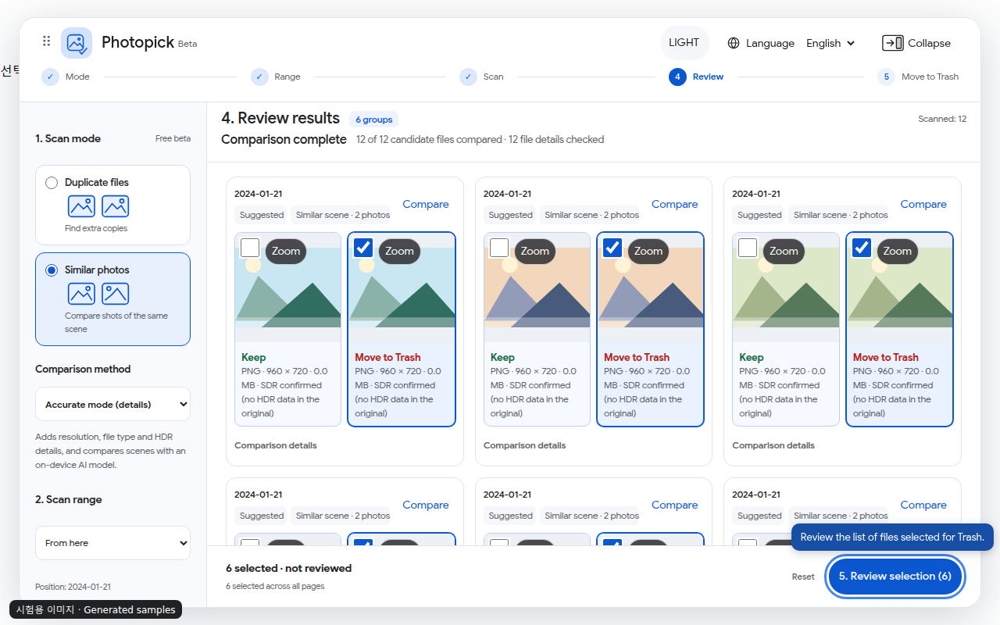

Find extra copies
Scan a date range for possible duplicates among your photos and videos. Open a group to check the items before choosing what to keep.
A Chrome extension for Google Photos
When you’ve taken five shots of the same moment, it helps to see them together. Photopick groups similar photos and finds potential duplicates so you can choose what to keep.
Free during beta · Desktop Chrome 123 or later

Watch two similar travel photos go from a date-range scan to a side-by-side comparison. Then see how to review the shots you might move to Trash.
Watch on YouTubeScan a date range for possible duplicates among your photos and videos. Open a group to check the items before choosing what to keep.
See photos of the same scene side by side. Zoom in to check details such as a sharper face or a better expression.
Check your selection in Photopick. Google Photos asks for your final confirmation before anything moves to Trash.
Try the dates of a trip or a weekend. A small date range makes it easier to see how the scan and review work.
Open Photopick Beta in the Chrome Web Store. Click Add to Chrome, review the permissions, then click Add extension.
Sign in to Google Photos. In Chrome’s puzzle-piece menu, choose Photopick Beta, then click Open Photopick. The panel opens on the right. Use the pin next to Photopick to keep it in your toolbar.
Choose Duplicate files or Similar photos. Under Scan range, select Date range, enter your dates, then click Start scan.
Open Review results and use Compare to inspect a group. Checked items are candidates for Trash. Choose Review selection to see the list before clicking Move to Trash. Confirm or cancel the move directly in Google Photos.
Fast mode compares previews. Accurate mode can also check available file details such as dimensions, file type and HDR information. Matching previews can come from different originals, so look at the file details and the images before deciding. For videos, review any parts you care about in Google Photos.
Use Review needed to find groups that need a closer look and Refresh photo details to check a group again. If you move the wrong item, open Google Photos Trash and restore it while it is still there.